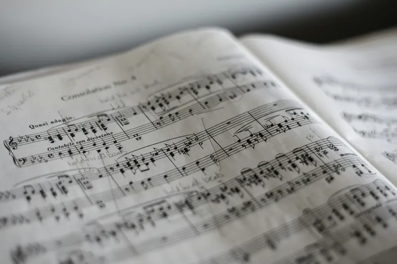
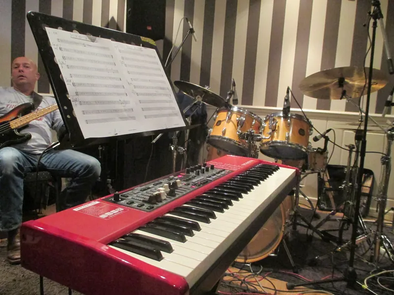
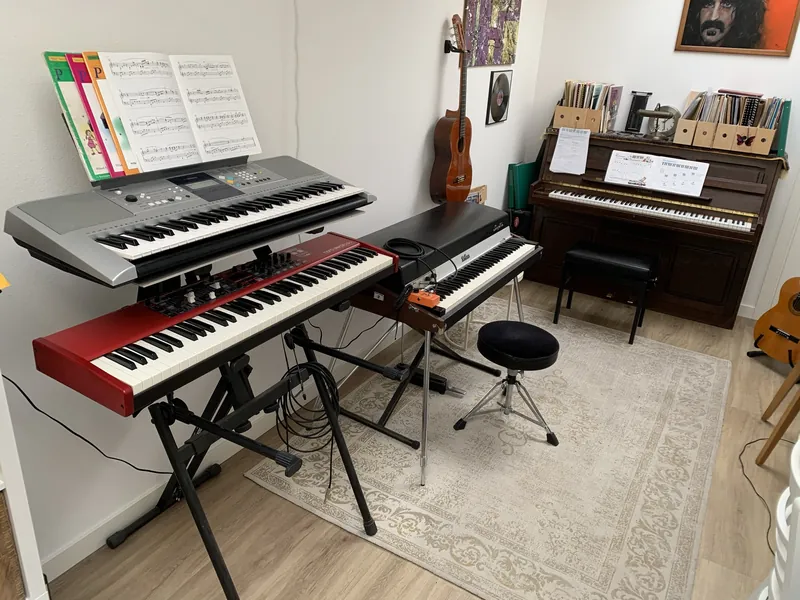
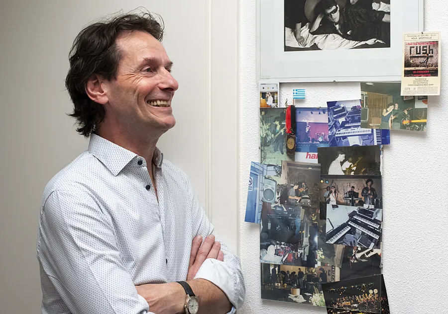

Jouw muziek, jouw stuk
Een eigen bibliotheek vol stukken en arrangementen, van Bach tot Van Buuren, en meespeel-mp3's op elk niveau.
Piano- en keyboardles in Berlicum · opgeleid aan het Fontys Conservatorium
Spelende pianist, opgeleid aan het Fontys Conservatorium

Een eigen bibliotheek vol stukken en arrangementen, van Bach tot Van Buuren, en meespeel-mp3's op elk niveau.

Wim staat op het podium in jazz, funk en rock. Die ervaring neemt hij mee in elke les.

Les op de akoestische piano of op keyboard. Twijfel je over wat je thuis neerzet? Wim adviseert je graag.
Kies hierboven een dag en tijd. Wim bevestigt je afspraak persoonlijk.
Je ontdekt of pianospelen iets voor je is en of de aanpak je bevalt. Gratis en vrijblijvend.
Een half uur per week of om de week, op een vaste dag en tijd die bij jou past.

"Mijn passie voor muziek wil ik met je delen."
Wim kreeg zijn eerste klassieke pianoles op zijn negende. Later speelde hij liedjes op het gehoor na, volgde jazz- en improvisatieles en studeerde aan het Fontys Conservatorium.
Van een vrolijk stuk voor kids tot een stuk voor gevorderden, en Wim zelf op het podium.
Alle opnames beluisterenOnze dochter speelt nu de nummers die ze zelf op de radio hoort. Wim zoekt er een versie bij die past bij wat ze kan, en daardoor gaat ze uit zichzelf achter de piano zitten.
Op mijn 52e begonnen. Geen moment het gevoel dat ik te oud was. Rustige uitleg en vooral veel spelen.
Ik wilde vooral akkoorden leren om mezelf te begeleiden bij het zingen. Precies dat kreeg ik, zonder omwegen.
Ik speel keyboard in een band. Wim weet hoe dat werkt op een podium en dat merk je aan alles.
De meespeel-mp3's zijn top. Thuis oefenen voelt daardoor als samen spelen.
Mijn zoon twijfelde tussen piano en keyboard. Na de proefles wist hij het, en Wim gaf eerlijk advies over de aanschaf.
38 à 40 lessen per jaar, betaald in vier termijnen. Om de week les kan ook, voor de helft van het bedrag.
Alle tarieven en voorwaardenOntdek of pianospelen iets voor je is. Kies een dag, Wim doet de rest.
Plan je gratis proefles